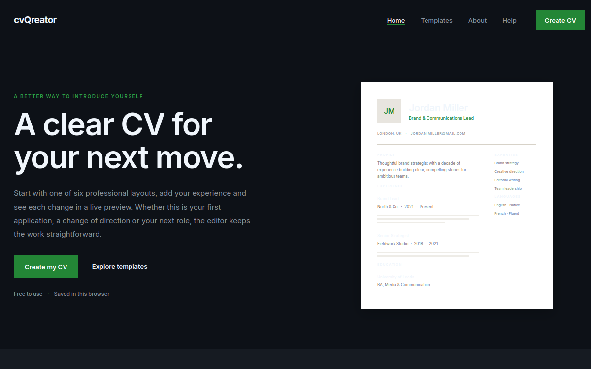

cvQreator
Frontend-only CV builder

Why I Built This
I got the idea for cvQreator from my own experience. I used to find it difficult to put together a good CV, and I realised that other people also struggle with organising their information and presenting their experience properly.
I began thinking about how I could make that process easier. Rather than making people struggle with formatting and arranging everything themselves, I wanted to build a tool that could help them put their CVs together more conveniently.
That idea became cvQreator. Building it gave me an opportunity to work on something practical while developing my skills and learning more about creating useful web applications.
Features
- Six professional CV layouts
- Live CV preview
- Customisable sections
- Show, hide and reorder sections
- Data saved in the browser
- Print or save a CV as PDF
- No account or registration required
Technologies
- HTML
- CSS
- JavaScript